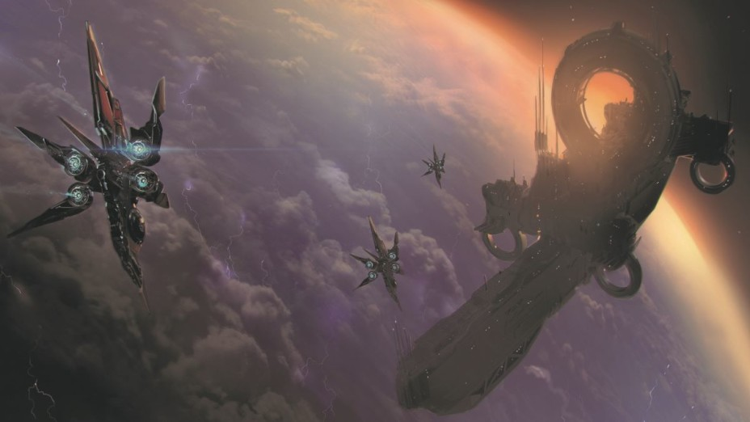

SYSTEM: PALLAS

Excurs - System: Pallas
Das Pallas-System ist am besten bekannt als Ort des ersten Kontakts zwischen den Menschen und den Xi’an. Diese ungewöhnliche erste Begegnung, die dazu führte, dass 276 Menschen von den Xi’an gefangen genommen wurden, ist bekannt, aber ihre Nachwirkungen sind viel weniger bekannt. Die Krise hat auch die Voraussetzungen für den Kalten Krieg geschaffen und das Misstrauen zwischen den Völkern für die kommenden Jahrhunderte gesät.
Die rasche Ausbreitung der Menschheit in zahlreiche neue Systeme verursachte ein Problem der Verwaltung. Die Vereinten Nationen der Erde (UNE) haben erkannt, dass sie nicht für die Kontrolle einer Multi-System-Expansion errichtet wurden. Diese Erkenntnis führte schließlich zur Bildung einer neuen Regierung, um die neuen Regionen des Hoheitsgebiet der Menschheit widerzuspiegeln: die United Planets of Earth (UPE).
Eine Vielzahl von Reformen begleitete diese Namensänderung. Es wurde ein Regierungstribunal, bestehend aus einem Generalsekretär, einen General und einem Anwalt, geschaffen. Es wurden neue Regeln und Vorschriften eingeführt, um die weitere Ausbreitung der Menschheit zu den Sternen zu regeln. Während viele Unternehmen diese neuen Gesetze anerkannten und respektierten, ignorierten andere sie, vor allem wenn lukrative Terraforming-Rechte in der Schwebe hingen. Eine solche Firma, Gaia Planet Services, wurde das berüchtigtste Beispiel für Letzteres. Im Jahre 2530 entdeckte Kathryn Segovia das Pallas-System durch das Baker-System und beschloss, den Navigationspunkt zu versteigern. Sie kümmerte sich nicht um den Ruhm, sondern sehnte sich nach dem Glück. Ihre vorläufigen Scans ergaben, dass das System mineralreiche Standorte und einen potenziell bewohnbaren Planeten besaß, so dass sie Gebote von denjenigen annahm, die am meisten für den Zugang zahlen würden – Bergbau und Terraforming-Konglomerate.
Obwohl eine Sprachbarriere die beiden Spezies trennte, stellte die Xi’an schnell fest, dass Baxter die Operation beaufsichtigte. Die Xi’an überraschten ihre Gefangenen mit der Freilassung Baxters als Zeichen des guten Willens. Er floh zum Baker-System und setzte sich sofort mit seinen Vorgesetzten von Gaia Planet Services in Verbindung anstatt mit den Behörden.
Angeblich argumentierte CEO Joseph Jules Jr., dass sie versuchen sollten, einen Deal mit den Xi’an selbst abzuschließen. Er suchte verzweifelt nach einem Weg, dieses Debakel in etwas Positives für das Unternehmen zu verwandeln. Eine Handvoll unterwürfiger Führungskräfte stimmten ihm zu, aber Baxter und andere drängten ihn zurück. Der Plan war ein Hirngespinst, es sei denn, das Unternehmen hätte Xeno-Sprachmitarbeiter, die diese unbekannte Sprache entziffern konnten. Widerwillig setzten sich die Führungskräfte des Unternehmens mit der UPE in Verbindung und enthüllten die schreckliche Situation, in der sie die Menschheit platziert hatten.
Es war die zweite Auflage des Xi’an, die für große Kontroverse sorgte. Sie beharrten darauf, dass die UPE das Ausmaß ihres Imperiums und die Lage aller derzeit bekannten Systeme enthüllen solle. UPE-Unterhändler drängten darauf, nicht bis ins letzte Details zu gehen, aber die Xi’an beharrten darauf.
Als zu Hause politischer Druck aufgebaut wurde, um die Gefangenen zu ihren Familien zurückzubringen, lernte die UPE mehr über diese seltsamen neuen Aliens. Als sich herausstellte, dass sie Hunderte von normalen Erdjahren lebten, machten sich die Unterhändler Gedanken darüber, wie lange die Xi’an bereit waren, die Verhandlungen fortzusetzen. Viele kamen zu dem Schluss, dass ihnen nichts anderes übrig blieb, als den Bedingungen des Xi’an zuzustimmen. Nach 57 Tagen wurde eine Übereinkunft getroffen, die Tortur beendet, und alle Geiseln wurden schließlich unverletzt freigelassen. Was aber die Menschheit im Gegenzug aufgab, würde das Verhältnis zwischen den beiden Spezies definieren. Die Diskrepanz zwischen dem, was die Xi’an über unsere Systeme wussten, und dem, was wir über ihre Systeme wussten, war eine Hauptursache für die Paranoia der Menschheit nach dem Pallas- Vorfall. Die ergriffenen Maßnahmen hatten auf beiden Seiten Misstrauen ausgelöst und die beiden Völker rückten langsam vom Verhandlungstisch ab, unsicher, wann und wo ihre nächste Begegnung stattfinden würde.
Obwohl die Menschheit den Xi’an Namen für das System, Hui sen Th.us’āng gelernt hatte, wurde es während der Verhandlungen wegen der Schwierigkeit, die viele hatten, es auszusprechen, nicht allgemein verwendet. Der eskalierende Kalte Krieg trieb die UEE dazu, ihr einen anderen Namen zu geben. Schließlich gab ihm das UEE-Militär den Namen Pallas, um mit anderen Perry-Line-Systemen übereinzustimmen, die nach Kriegsgöttern benannt wurden. Seitdem ist der Name geblieben.
Obwohl die Xi’an schließlich das Pallas-System während des Höhepunkts der Spannungen mit dem Messer-Regime aufgaben, sorgte der Perry-Line- Pakt dafür, dass das Pallas-System nach dem Sturz der Messers in Xi’an-Hände bleiben würde. Wie es ihre Gewohnheit ist, jedem System einen bestimmten Zweck zuzuweisen, benutzen die Xi’an jetzt Pallas als wissenschaftliches System, um Forschung zu betreiben, von der vieles für die UEE ein Rätsel bleibt, da der menschliche Zugang zum System hochgradig reguliert ist.

“Für mich ist Pallas das perfekte Beispiel dafür, wie die Xi’ n mit der Menschheit umgehen. Wir dürfen das System besuchen, aber sie wollen nicht, dass wir zu viel herumstöbern. So wie der Nachbar, der die Tür aufmacht, wenn du anklopfst, dich aber nie einlädt.” – Harry Tenny, ein Leitfaden für Beschwerdeführer zum Vers, 2939
Ungehinderte Expansion
Anfang des 26. Jahrhunderts wurde die Menschheit mit der Aussicht auf Entdeckung und Ausbreitung vereinnahmt. Die Fortschritte in der Scantechnologie machten ihre Komponenten viel zugänglicher, während Pioniere der Technik die Terraforming-Prozesse verfeinerten, was zu einer Zunahme potenzieller Forscher führte, die auf der Suche nach dem nächsten unentdeckten Gebiet waren.Die rasche Ausbreitung der Menschheit in zahlreiche neue Systeme verursachte ein Problem der Verwaltung. Die Vereinten Nationen der Erde (UNE) haben erkannt, dass sie nicht für die Kontrolle einer Multi-System-Expansion errichtet wurden. Diese Erkenntnis führte schließlich zur Bildung einer neuen Regierung, um die neuen Regionen des Hoheitsgebiet der Menschheit widerzuspiegeln: die United Planets of Earth (UPE).
Eine Vielzahl von Reformen begleitete diese Namensänderung. Es wurde ein Regierungstribunal, bestehend aus einem Generalsekretär, einen General und einem Anwalt, geschaffen. Es wurden neue Regeln und Vorschriften eingeführt, um die weitere Ausbreitung der Menschheit zu den Sternen zu regeln. Während viele Unternehmen diese neuen Gesetze anerkannten und respektierten, ignorierten andere sie, vor allem wenn lukrative Terraforming-Rechte in der Schwebe hingen. Eine solche Firma, Gaia Planet Services, wurde das berüchtigtste Beispiel für Letzteres. Im Jahre 2530 entdeckte Kathryn Segovia das Pallas-System durch das Baker-System und beschloss, den Navigationspunkt zu versteigern. Sie kümmerte sich nicht um den Ruhm, sondern sehnte sich nach dem Glück. Ihre vorläufigen Scans ergaben, dass das System mineralreiche Standorte und einen potenziell bewohnbaren Planeten besaß, so dass sie Gebote von denjenigen annahm, die am meisten für den Zugang zahlen würden – Bergbau und Terraforming-Konglomerate.
Unternehmensmissbrauch
Gaia Planet Services gewann die Ausschreibung und fuhr mit einem Terraforming-Team nach Pallas. Die Nachrichten würden später aufdecken, dass die Unternehmensleitung eifrig war, an jeder möglichen Ecke den Etat zu kürzen, um den exorbitanten Preis, der gezahlt wurde, wieder herauszuholen. Dazu gehörte auch, das System nicht offiziell bei der UPE zu registrieren oder die entsprechenden Terraforming-Genehmigungen zu beantragen. Stattdessen beschlossen sie, ihren Betrieb wieder aufzunehmen und später die bürokratischen Hürden anzugehen. Wie Firmenchef Joseph Jules Jr. in einem Memo schrieb:”Wir zahlen lieber die Geldstrafe, als Zeit zu verschwenden.” Vorarbeiter Charles Baxter führte ein Team in das System und brachte es direkt nach Pallas III, wo es begann, die besten Standorte für Terraforming-Equipment zu vermessen. Es dauerte nicht lange, bis seltsame Schiffe über den Horizont flogen und die Vermessungsteams umstellten. Alle 276 Menschen wurden schnell gefangen genommen und unter Bewachung gestellt. Das war die erste Begegnung der Menschheit mit den Xi’an.Obwohl eine Sprachbarriere die beiden Spezies trennte, stellte die Xi’an schnell fest, dass Baxter die Operation beaufsichtigte. Die Xi’an überraschten ihre Gefangenen mit der Freilassung Baxters als Zeichen des guten Willens. Er floh zum Baker-System und setzte sich sofort mit seinen Vorgesetzten von Gaia Planet Services in Verbindung anstatt mit den Behörden.
Angeblich argumentierte CEO Joseph Jules Jr., dass sie versuchen sollten, einen Deal mit den Xi’an selbst abzuschließen. Er suchte verzweifelt nach einem Weg, dieses Debakel in etwas Positives für das Unternehmen zu verwandeln. Eine Handvoll unterwürfiger Führungskräfte stimmten ihm zu, aber Baxter und andere drängten ihn zurück. Der Plan war ein Hirngespinst, es sei denn, das Unternehmen hätte Xeno-Sprachmitarbeiter, die diese unbekannte Sprache entziffern konnten. Widerwillig setzten sich die Führungskräfte des Unternehmens mit der UPE in Verbindung und enthüllten die schreckliche Situation, in der sie die Menschheit platziert hatten.
Strategischer Vorteil
Der beste Xenolinguist der UPE brauchte 15 Tage, um eine rudimentäre Form der Kommunikation mit den Xi’an zu entwerfen, woraufhin offizielle Diskussionen über die Freilassung der übrigen Arbeiter begannen. Viele innerhalb der Regierung meckerten über die schreckliche Verhandlungsposition, in der Gaia Planet Services sie zurückgelassen hatte, während andere am furchtbaren ersten Eindruck, den die Menschheit den Xi’an gegeben hatte, zauderten. Die folgenden Wochen waren für die UPE ein diplomatischer Drahtseil-Akt. Die Xi’an hatten zwei Hauptstreitpunkte, die vor der Freilassung der Geiseln geklärt werden musste. Der erste Punkt wurde schnell vereinbart; die UPE würde das Pallas-System sofort verlassen.Es war die zweite Auflage des Xi’an, die für große Kontroverse sorgte. Sie beharrten darauf, dass die UPE das Ausmaß ihres Imperiums und die Lage aller derzeit bekannten Systeme enthüllen solle. UPE-Unterhändler drängten darauf, nicht bis ins letzte Details zu gehen, aber die Xi’an beharrten darauf.
Als zu Hause politischer Druck aufgebaut wurde, um die Gefangenen zu ihren Familien zurückzubringen, lernte die UPE mehr über diese seltsamen neuen Aliens. Als sich herausstellte, dass sie Hunderte von normalen Erdjahren lebten, machten sich die Unterhändler Gedanken darüber, wie lange die Xi’an bereit waren, die Verhandlungen fortzusetzen. Viele kamen zu dem Schluss, dass ihnen nichts anderes übrig blieb, als den Bedingungen des Xi’an zuzustimmen. Nach 57 Tagen wurde eine Übereinkunft getroffen, die Tortur beendet, und alle Geiseln wurden schließlich unverletzt freigelassen. Was aber die Menschheit im Gegenzug aufgab, würde das Verhältnis zwischen den beiden Spezies definieren. Die Diskrepanz zwischen dem, was die Xi’an über unsere Systeme wussten, und dem, was wir über ihre Systeme wussten, war eine Hauptursache für die Paranoia der Menschheit nach dem Pallas- Vorfall. Die ergriffenen Maßnahmen hatten auf beiden Seiten Misstrauen ausgelöst und die beiden Völker rückten langsam vom Verhandlungstisch ab, unsicher, wann und wo ihre nächste Begegnung stattfinden würde.
Obwohl die Menschheit den Xi’an Namen für das System, Hui sen Th.us’āng gelernt hatte, wurde es während der Verhandlungen wegen der Schwierigkeit, die viele hatten, es auszusprechen, nicht allgemein verwendet. Der eskalierende Kalte Krieg trieb die UEE dazu, ihr einen anderen Namen zu geben. Schließlich gab ihm das UEE-Militär den Namen Pallas, um mit anderen Perry-Line-Systemen übereinzustimmen, die nach Kriegsgöttern benannt wurden. Seitdem ist der Name geblieben.
Obwohl die Xi’an schließlich das Pallas-System während des Höhepunkts der Spannungen mit dem Messer-Regime aufgaben, sorgte der Perry-Line- Pakt dafür, dass das Pallas-System nach dem Sturz der Messers in Xi’an-Hände bleiben würde. Wie es ihre Gewohnheit ist, jedem System einen bestimmten Zweck zuzuweisen, benutzen die Xi’an jetzt Pallas als wissenschaftliches System, um Forschung zu betreiben, von der vieles für die UEE ein Rätsel bleibt, da der menschliche Zugang zum System hochgradig reguliert ist.
Pallas I
Am nächsten bei Pallas’ gelb-weißem G1-Hauptsequenzstern sitzt ein Eisenplanet. Die Xi’an haben Anteile von Pallas I abgebaut, aber es bleiben riesige Abbaugebiete übrig. Da der Rest des Systems für einige wissenschaftliche Arbeiten bestimmt ist, glaubt man, dass dies auch für Pallas I gilt. Soweit wir wissen, findet auf dem Planeten kein kommerzieller Bergbau statt.Pallas II
Dieser Smogplanet scheint von den Xi’an unberührt zu sein. Allerdings kann die UEE nicht sicher sein, dass unter der dicken Atmosphäre des Planeten keine Forschungsprojekte stattfinden.Pallas III
Der berüchtigte Moment des ersten Kontakts zwischen der Menschheit und den Xi’an fand auf dieser irdischen Welt statt. Die Xi’an nutzten ihn bereits damals als Testfeld für verschiedene Geohacking- und Terraforming-Technologien. Diese wissenschaftlichen Bemühungen wurden aufgegeben, als die Xi’an während des Kalten Krieges aus dem System flohen, um nach der Entspannung wieder aufgenommen zu werden. Die Einzelheiten dieser Experimente sind unklar. Offensichtlich sind mehrere Teile des Planeten mit Rauch gefüllt, vermutlich wegen eines massiven unterirdischen Feuers. Ob dieses wütende Feuer Teil eines Xi’an-Experiments ist oder lediglich eine Nebenwirkung, ist unbekannt.Asteroiden Gürtel
Als Kathryn Segovia dieses System entdeckte, glaubte sie, dass Bergbauunternehmen für den Zugang zu diesem mineralreichen Asteroidengürtel töten würden. Überraschenderweise erachten es die Xi’an für illegal, Bergbau zu betreiben, so dass es relativ unberührt bleibt. Einige sind immer noch gereizt von den riesigen Ressourcen und bauen es unter großem persönlichen Risiko ab.Pallas IV
Pallas IV ist ein bemerkenswerter Gasriese, nicht für bestimmte astronomische Eigenschaften, sondern weil die Xi’an in ihrer Atmosphäre eine unter Druck stehende Forschungsstation errichtet haben. Menschliche Wissenschaftler wissen sehr wenig über die Station, aber es ist offensichtlich Technologie, welche über die der UEE weit hinausgeht.Pallas V
Ohne Atmosphäre und ohne nennenswerte Ressourcen umkreist dieser kleine Zwergplanet mit seinem einsamen Wesen die Außenbereiche des Systems.
Reisewarnung
Da Pallas von den Xi’an als wissenschaftliches Forschungssystem bezeichnet wird, müssen die Besucher darauf achten, Bereiche zu meiden, die als tabu gelten. Xi’an-Behörden werden nicht zögern, Ihr Schiff zu stoppen oder sogar zu zerstören, wenn es sich in einen verbotenen Teil des Systems wagt.Ein Flüstern im Wind
“Ehrlich gesagt, es war der unglaublichste und peinlichste Moment meines Lebens. Als ich sah, wie diese seltsamen Schiffe in der Nähe herabstürzten, war ich so beeindruckt. Ich hatte noch nie etwas Ähnliches gesehen. Dann erinnerte ich mich daran, was wir dort taten und erkannte, dass wir in großen Schwierigkeiten stecken.” – Charles Baxter, Zeugnisabschrift vor dem UPE-Tribunal, 2530“Für mich ist Pallas das perfekte Beispiel dafür, wie die Xi’ n mit der Menschheit umgehen. Wir dürfen das System besuchen, aber sie wollen nicht, dass wir zu viel herumstöbern. So wie der Nachbar, der die Tür aufmacht, wenn du anklopfst, dich aber nie einlädt.” – Harry Tenny, ein Leitfaden für Beschwerdeführer zum Vers, 2939